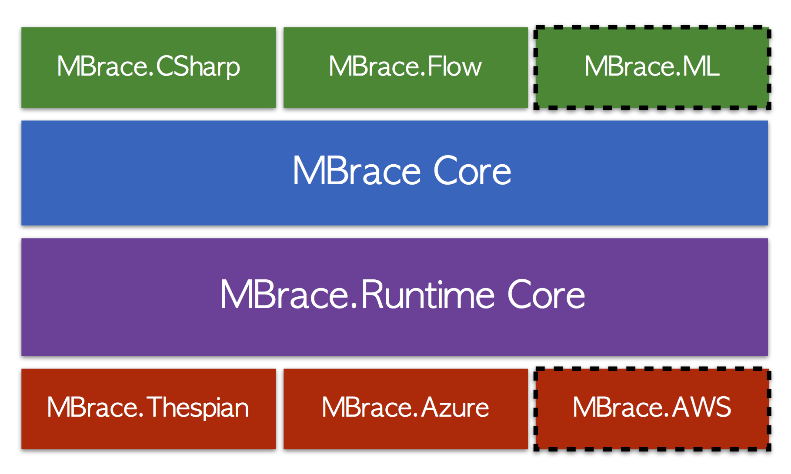

namespace System
namespace System.Threading
namespace System.Threading.Tasks
namespace System.Net
namespace MBrace
namespace MBrace.Core
module BuilderAsyncExtensions
from MBrace.Core
from MBrace.Core
namespace MBrace.Thespian
namespace MBrace.Flow
namespace Microsoft
namespace Microsoft.FSharp
namespace Microsoft.FSharp.Control
namespace XPlot
module GoogleCharts
from XPlot
from XPlot
val workA : obj
Full name: Index.workA
Full name: Index.workA
val workB : obj
Full name: Index.workB
Full name: Index.workB
val uris : Uri list
Full name: Index.uris
Full name: Index.uris
module Unchecked
from Microsoft.FSharp.Core.Operators
from Microsoft.FSharp.Core.Operators
val defaultof<'T> : 'T
Full name: Microsoft.FSharp.Core.Operators.Unchecked.defaultof
Full name: Microsoft.FSharp.Core.Operators.Unchecked.defaultof
Multiple items
type Uri =
new : uriString:string -> Uri + 5 overloads
member AbsolutePath : string
member AbsoluteUri : string
member Authority : string
member DnsSafeHost : string
member Equals : comparand:obj -> bool
member Fragment : string
member GetComponents : components:UriComponents * format:UriFormat -> string
member GetHashCode : unit -> int
member GetLeftPart : part:UriPartial -> string
...
Full name: System.Uri
--------------------
Uri(uriString: string) : unit
Uri(uriString: string, uriKind: UriKind) : unit
Uri(baseUri: Uri, relativeUri: string) : unit
Uri(baseUri: Uri, relativeUri: Uri) : unit
type Uri =
new : uriString:string -> Uri + 5 overloads
member AbsolutePath : string
member AbsoluteUri : string
member Authority : string
member DnsSafeHost : string
member Equals : comparand:obj -> bool
member Fragment : string
member GetComponents : components:UriComponents * format:UriFormat -> string
member GetHashCode : unit -> int
member GetLeftPart : part:UriPartial -> string
...
Full name: System.Uri
--------------------
Uri(uriString: string) : unit
Uri(uriString: string, uriKind: UriKind) : unit
Uri(baseUri: Uri, relativeUri: string) : unit
Uri(baseUri: Uri, relativeUri: Uri) : unit
type 'T list = List<'T>
Full name: Microsoft.FSharp.Collections.list<_>
Full name: Microsoft.FSharp.Collections.list<_>
val dataSizes : int list
Full name: Index.Wordcount.dataSizes
Full name: Index.Wordcount.dataSizes
val clusterSizes : int list
Full name: Index.Wordcount.clusterSizes
Full name: Index.Wordcount.clusterSizes
val downloadTimes : float list
Full name: Index.Wordcount.downloadTimes
Full name: Index.Wordcount.downloadTimes
val wordCountTimes : float list
Full name: Index.Wordcount.wordCountTimes
Full name: Index.Wordcount.wordCountTimes
val labels : string list
Full name: Index.Wordcount.labels
Full name: Index.Wordcount.labels
Multiple items
module List
from Microsoft.FSharp.Collections
--------------------
type List<'T> =
| ( [] )
| ( :: ) of Head: 'T * Tail: 'T list
interface IEnumerable
interface IEnumerable<'T>
member GetSlice : startIndex:int option * endIndex:int option -> 'T list
member Head : 'T
member IsEmpty : bool
member Item : index:int -> 'T with get
member Length : int
member Tail : 'T list
static member Cons : head:'T * tail:'T list -> 'T list
static member Empty : 'T list
Full name: Microsoft.FSharp.Collections.List<_>
module List
from Microsoft.FSharp.Collections
--------------------
type List<'T> =
| ( [] )
| ( :: ) of Head: 'T * Tail: 'T list
interface IEnumerable
interface IEnumerable<'T>
member GetSlice : startIndex:int option * endIndex:int option -> 'T list
member Head : 'T
member IsEmpty : bool
member Item : index:int -> 'T with get
member Length : int
member Tail : 'T list
static member Cons : head:'T * tail:'T list -> 'T list
static member Empty : 'T list
Full name: Microsoft.FSharp.Collections.List<_>
val zip : list1:'T1 list -> list2:'T2 list -> ('T1 * 'T2) list
Full name: Microsoft.FSharp.Collections.List.zip
Full name: Microsoft.FSharp.Collections.List.zip
val map : mapping:('T -> 'U) -> list:'T list -> 'U list
Full name: Microsoft.FSharp.Collections.List.map
Full name: Microsoft.FSharp.Collections.List.map
val c : int
val d : int
val sprintf : format:Printf.StringFormat<'T> -> 'T
Full name: Microsoft.FSharp.Core.ExtraTopLevelOperators.sprintf
Full name: Microsoft.FSharp.Core.ExtraTopLevelOperators.sprintf
val downloadData : (string * float) list
Full name: Index.Wordcount.downloadData
Full name: Index.Wordcount.downloadData
val wordCountData : (string * float) list
Full name: Index.Wordcount.wordCountData
Full name: Index.Wordcount.wordCountData
val chart : GoogleChart
Full name: Index.Wordcount.chart
Full name: Index.Wordcount.chart
type Chart =
static member Annotation : data:seq<#seq<DateTime * 'V * string * string>> * ?Labels:seq<string> * ?Options:Options -> GoogleChart (requires 'V :> value)
static member Annotation : data:seq<DateTime * #value * string * string> * ?Labels:seq<string> * ?Options:Options -> GoogleChart
static member Area : data:seq<#seq<'K * 'V>> * ?Labels:seq<string> * ?Options:Options -> GoogleChart (requires 'K :> key and 'V :> value)
static member Area : data:seq<#key * #value> * ?Labels:seq<string> * ?Options:Options -> GoogleChart
static member Bar : data:seq<#seq<'K * 'V>> * ?Labels:seq<string> * ?Options:Options -> GoogleChart (requires 'K :> key and 'V :> value)
static member Bar : data:seq<#key * #value> * ?Labels:seq<string> * ?Options:Options -> GoogleChart
static member Bubble : data:seq<string * #value * #value * #value * #value> * ?Labels:seq<string> * ?Options:Options -> GoogleChart
static member Bubble : data:seq<string * #value * #value * #value> * ?Labels:seq<string> * ?Options:Options -> GoogleChart
static member Bubble : data:seq<string * #value * #value> * ?Labels:seq<string> * ?Options:Options -> GoogleChart
static member Calendar : data:seq<DateTime * #value> * ?Labels:seq<string> * ?Options:Options -> GoogleChart
...
Full name: XPlot.GoogleCharts.Chart
static member Annotation : data:seq<#seq<DateTime * 'V * string * string>> * ?Labels:seq<string> * ?Options:Options -> GoogleChart (requires 'V :> value)
static member Annotation : data:seq<DateTime * #value * string * string> * ?Labels:seq<string> * ?Options:Options -> GoogleChart
static member Area : data:seq<#seq<'K * 'V>> * ?Labels:seq<string> * ?Options:Options -> GoogleChart (requires 'K :> key and 'V :> value)
static member Area : data:seq<#key * #value> * ?Labels:seq<string> * ?Options:Options -> GoogleChart
static member Bar : data:seq<#seq<'K * 'V>> * ?Labels:seq<string> * ?Options:Options -> GoogleChart (requires 'K :> key and 'V :> value)
static member Bar : data:seq<#key * #value> * ?Labels:seq<string> * ?Options:Options -> GoogleChart
static member Bubble : data:seq<string * #value * #value * #value * #value> * ?Labels:seq<string> * ?Options:Options -> GoogleChart
static member Bubble : data:seq<string * #value * #value * #value> * ?Labels:seq<string> * ?Options:Options -> GoogleChart
static member Bubble : data:seq<string * #value * #value> * ?Labels:seq<string> * ?Options:Options -> GoogleChart
static member Calendar : data:seq<DateTime * #value> * ?Labels:seq<string> * ?Options:Options -> GoogleChart
...
Full name: XPlot.GoogleCharts.Chart
static member Chart.Column : data:seq<#seq<'K * 'V>> * ?Labels:seq<string> * ?Options:Options -> GoogleChart (requires 'K :> key and 'V :> value)
static member Chart.Column : data:seq<#key * #value> * ?Labels:seq<string> * ?Options:Options -> GoogleChart
static member Chart.Column : data:seq<#key * #value> * ?Labels:seq<string> * ?Options:Options -> GoogleChart
static member Chart.WithXTitle : xTitle:string -> chart:GoogleChart -> GoogleChart
static member Chart.WithYTitle : yTitle:string -> chart:GoogleChart -> GoogleChart
static member Chart.WithSize : size:(int * int) -> chart:GoogleChart -> GoogleChart
static member Chart.Show : chart:GoogleChart -> GoogleChart
val clusterSizes : int list
Full name: Index.KNN.clusterSizes
Full name: Index.KNN.clusterSizes
val times : float list
Full name: Index.KNN.times
Full name: Index.KNN.times
val localLabel : string
Full name: Index.KNN.localLabel
Full name: Index.KNN.localLabel
val localTime : float
Full name: Index.KNN.localTime
Full name: Index.KNN.localTime
val data : (string * float) list
Full name: Index.KNN.data
Full name: Index.KNN.data
val sz : int
val t : float
val chart : GoogleChart
Full name: Index.KNN.chart
Full name: Index.KNN.chart
property GoogleChart.Html: string
val clusterSizes : int list
Full name: Index.Propan.clusterSizes
Full name: Index.Propan.clusterSizes
val times : float list
Full name: Index.Propan.times
Full name: Index.Propan.times
val localLabel : string
Full name: Index.Propan.localLabel
Full name: Index.Propan.localLabel
val localTime : float
Full name: Index.Propan.localTime
Full name: Index.Propan.localTime
val data : (string * float) list
Full name: Index.Propan.data
Full name: Index.Propan.data
val chart : GoogleChart
Full name: Index.Propan.chart
Full name: Index.Propan.chart
val locData : (string * float) list
Full name: Index.Code.locData
Full name: Index.Code.locData
val chart : GoogleChart
Full name: Index.Code.chart
Full name: Index.Code.chart
static member Chart.Bar : data:seq<#seq<'K * 'V>> * ?Labels:seq<string> * ?Options:Options -> GoogleChart (requires 'K :> key and 'V :> value)
static member Chart.Bar : data:seq<#key * #value> * ?Labels:seq<string> * ?Options:Options -> GoogleChart
static member Chart.Bar : data:seq<#key * #value> * ?Labels:seq<string> * ?Options:Options -> GoogleChart
val getLineCountAsync : uri:Uri -> Async<int>
Full name: Index.getLineCountAsync
Full name: Index.getLineCountAsync
val uri : Uri
val async : AsyncBuilder
Full name: Microsoft.FSharp.Core.ExtraTopLevelOperators.async
Full name: Microsoft.FSharp.Core.ExtraTopLevelOperators.async
val wc : WebClient
Multiple items
type WebClient =
inherit Component
new : unit -> WebClient
member BaseAddress : string with get, set
member CachePolicy : RequestCachePolicy with get, set
member CancelAsync : unit -> unit
member Credentials : ICredentials with get, set
member DownloadData : address:string -> byte[] + 1 overload
member DownloadDataAsync : address:Uri -> unit + 1 overload
member DownloadFile : address:string * fileName:string -> unit + 1 overload
member DownloadFileAsync : address:Uri * fileName:string -> unit + 1 overload
member DownloadString : address:string -> string + 1 overload
...
Full name: System.Net.WebClient
--------------------
WebClient() : unit
type WebClient =
inherit Component
new : unit -> WebClient
member BaseAddress : string with get, set
member CachePolicy : RequestCachePolicy with get, set
member CancelAsync : unit -> unit
member Credentials : ICredentials with get, set
member DownloadData : address:string -> byte[] + 1 overload
member DownloadDataAsync : address:Uri -> unit + 1 overload
member DownloadFile : address:string * fileName:string -> unit + 1 overload
member DownloadFileAsync : address:Uri * fileName:string -> unit + 1 overload
member DownloadString : address:string -> string + 1 overload
...
Full name: System.Net.WebClient
--------------------
WebClient() : unit
val lines : string
member WebClient.AsyncDownloadString : address:Uri -> Async<string>
String.Split([<ParamArray>] separator: char []) : string []
String.Split(separator: string [], options: StringSplitOptions) : string []
String.Split(separator: char [], options: StringSplitOptions) : string []
String.Split(separator: char [], count: int) : string []
String.Split(separator: string [], count: int, options: StringSplitOptions) : string []
String.Split(separator: char [], count: int, options: StringSplitOptions) : string []
String.Split(separator: string [], options: StringSplitOptions) : string []
String.Split(separator: char [], options: StringSplitOptions) : string []
String.Split(separator: char [], count: int) : string []
String.Split(separator: string [], count: int, options: StringSplitOptions) : string []
String.Split(separator: char [], count: int, options: StringSplitOptions) : string []
type Parallel =
static member For : fromInclusive:int * toExclusive:int * body:Action<int> -> ParallelLoopResult + 11 overloads
static member ForEach<'TSource> : source:IEnumerable<'TSource> * body:Action<'TSource> -> ParallelLoopResult + 19 overloads
static member Invoke : [<ParamArray>] actions:Action[] -> unit + 1 overload
Full name: System.Threading.Tasks.Parallel
static member For : fromInclusive:int * toExclusive:int * body:Action<int> -> ParallelLoopResult + 11 overloads
static member ForEach<'TSource> : source:IEnumerable<'TSource> * body:Action<'TSource> -> ParallelLoopResult + 19 overloads
static member Invoke : [<ParamArray>] actions:Action[] -> unit + 1 overload
Full name: System.Threading.Tasks.Parallel
type Array =
member Clone : unit -> obj
member CopyTo : array:Array * index:int -> unit + 1 overload
member GetEnumerator : unit -> IEnumerator
member GetLength : dimension:int -> int
member GetLongLength : dimension:int -> int64
member GetLowerBound : dimension:int -> int
member GetUpperBound : dimension:int -> int
member GetValue : [<ParamArray>] indices:int[] -> obj + 7 overloads
member Initialize : unit -> unit
member IsFixedSize : bool
...
Full name: System.Array
member Clone : unit -> obj
member CopyTo : array:Array * index:int -> unit + 1 overload
member GetEnumerator : unit -> IEnumerator
member GetLength : dimension:int -> int
member GetLongLength : dimension:int -> int64
member GetLowerBound : dimension:int -> int
member GetUpperBound : dimension:int -> int
member GetValue : [<ParamArray>] indices:int[] -> obj + 7 overloads
member Initialize : unit -> unit
member IsFixedSize : bool
...
Full name: System.Array
val sum : array:'T [] -> 'T (requires member ( + ) and member get_Zero)
Full name: Microsoft.FSharp.Collections.Array.sum
Full name: Microsoft.FSharp.Collections.Array.sum
Multiple items
type DivideByZeroException =
inherit ArithmeticException
new : unit -> DivideByZeroException + 2 overloads
Full name: System.DivideByZeroException
--------------------
DivideByZeroException() : unit
DivideByZeroException(message: string) : unit
DivideByZeroException(message: string, innerException: exn) : unit
type DivideByZeroException =
inherit ArithmeticException
new : unit -> DivideByZeroException + 2 overloads
Full name: System.DivideByZeroException
--------------------
DivideByZeroException() : unit
DivideByZeroException(message: string) : unit
DivideByZeroException(message: string, innerException: exn) : unit
Multiple items
module CloudFlow
from MBrace.Flow
--------------------
type CloudFlow =
static member OfArray : source:'T [] -> CloudFlow<'T>
static member OfCloudArrays : cloudArrays:seq<#CloudArray<'T>> -> LocalCloud<PersistedCloudFlow<'T>>
static member OfCloudCollection : collection:ICloudCollection<'T> * ?sizeThresholdPerWorker:(unit -> int64) -> CloudFlow<'T>
static member OfCloudDirectory : dirPath:string * serializer:ISerializer * ?sizeThresholdPerCore:int64 -> CloudFlow<'T>
static member OfCloudDirectory : dirPath:string * ?deserializer:(Stream -> seq<'T>) * ?sizeThresholdPerCore:int64 -> CloudFlow<'T>
static member OfCloudDirectory : dirPath:string * deserializer:(TextReader -> seq<'T>) * ?encoding:Encoding * ?sizeThresholdPerCore:int64 -> CloudFlow<'T>
static member OfCloudDirectoryByLine : dirPath:string * ?encoding:Encoding * ?sizeThresholdPerCore:int64 -> CloudFlow<string>
static member OfCloudFileByLine : path:string * ?encoding:Encoding -> CloudFlow<string>
static member OfCloudFileByLine : paths:seq<string> * ?encoding:Encoding * ?sizeThresholdPerCore:int64 -> CloudFlow<string>
static member OfCloudFiles : paths:seq<string> * serializer:ISerializer * ?sizeThresholdPerCore:int64 -> CloudFlow<'T>
...
Full name: MBrace.Flow.CloudFlow
--------------------
type CloudFlow<'T> =
interface
abstract member WithEvaluators : collectorFactory:LocalCloud<Collector<'T,'S>> -> projection:('S -> LocalCloud<'R>) -> combiner:('R [] -> LocalCloud<'R>) -> Cloud<'R>
abstract member DegreeOfParallelism : int option
end
Full name: MBrace.Flow.CloudFlow<_>
module CloudFlow
from MBrace.Flow
--------------------
type CloudFlow =
static member OfArray : source:'T [] -> CloudFlow<'T>
static member OfCloudArrays : cloudArrays:seq<#CloudArray<'T>> -> LocalCloud<PersistedCloudFlow<'T>>
static member OfCloudCollection : collection:ICloudCollection<'T> * ?sizeThresholdPerWorker:(unit -> int64) -> CloudFlow<'T>
static member OfCloudDirectory : dirPath:string * serializer:ISerializer * ?sizeThresholdPerCore:int64 -> CloudFlow<'T>
static member OfCloudDirectory : dirPath:string * ?deserializer:(Stream -> seq<'T>) * ?sizeThresholdPerCore:int64 -> CloudFlow<'T>
static member OfCloudDirectory : dirPath:string * deserializer:(TextReader -> seq<'T>) * ?encoding:Encoding * ?sizeThresholdPerCore:int64 -> CloudFlow<'T>
static member OfCloudDirectoryByLine : dirPath:string * ?encoding:Encoding * ?sizeThresholdPerCore:int64 -> CloudFlow<string>
static member OfCloudFileByLine : path:string * ?encoding:Encoding -> CloudFlow<string>
static member OfCloudFileByLine : paths:seq<string> * ?encoding:Encoding * ?sizeThresholdPerCore:int64 -> CloudFlow<string>
static member OfCloudFiles : paths:seq<string> * serializer:ISerializer * ?sizeThresholdPerCore:int64 -> CloudFlow<'T>
...
Full name: MBrace.Flow.CloudFlow
--------------------
type CloudFlow<'T> =
interface
abstract member WithEvaluators : collectorFactory:LocalCloud<Collector<'T,'S>> -> projection:('S -> LocalCloud<'R>) -> combiner:('R [] -> LocalCloud<'R>) -> Cloud<'R>
abstract member DegreeOfParallelism : int option
end
Full name: MBrace.Flow.CloudFlow<_>
static member CloudFlow.OfHttpFileByLine : urls:seq<string> * ?encoding:Text.Encoding -> CloudFlow<string>
static member CloudFlow.OfHttpFileByLine : url:string * ?encoding:Text.Encoding -> CloudFlow<string>
static member CloudFlow.OfHttpFileByLine : url:string * ?encoding:Text.Encoding -> CloudFlow<string>
val collect : f:('T -> #seq<'R>) -> flow:CloudFlow<'T> -> CloudFlow<'R>
Full name: MBrace.Flow.CloudFlow.collect
Full name: MBrace.Flow.CloudFlow.collect
val line : string
val map : f:('T -> 'R) -> flow:CloudFlow<'T> -> CloudFlow<'R>
Full name: MBrace.Flow.CloudFlow.map
Full name: MBrace.Flow.CloudFlow.map
val word : string
String.Trim() : string
String.Trim([<ParamArray>] trimChars: char []) : string
String.Trim([<ParamArray>] trimChars: char []) : string
val filter : predicate:('T -> bool) -> flow:CloudFlow<'T> -> CloudFlow<'T>
Full name: MBrace.Flow.CloudFlow.filter
Full name: MBrace.Flow.CloudFlow.filter
property String.Length: int
val countBy : projection:('T -> 'Key) -> flow:CloudFlow<'T> -> CloudFlow<'Key * int64> (requires equality)
Full name: MBrace.Flow.CloudFlow.countBy
Full name: MBrace.Flow.CloudFlow.countBy
val id : x:'T -> 'T
Full name: Microsoft.FSharp.Core.Operators.id
Full name: Microsoft.FSharp.Core.Operators.id
val sortByDescending : projection:('T -> 'Key) -> takeCount:int -> flow:CloudFlow<'T> -> CloudFlow<'T> (requires comparison)
Full name: MBrace.Flow.CloudFlow.sortByDescending
Full name: MBrace.Flow.CloudFlow.sortByDescending
val count : int64
val toArray : flow:CloudFlow<'T> -> MBrace.Core.Cloud<'T []>
Full name: MBrace.Flow.CloudFlow.toArray
Full name: MBrace.Flow.CloudFlow.toArray
MBrace
REPL driven scalable computation
Eirik Tsarpalis
About me
- Mathematician by training
- F#/.NET developer for the past 4 years
- R&D Engineer at Nessos in Athens, Greece
- Author of FsPickler, Vagabond, Argu
- Find me on @eiriktsarpalis
About Nessos
- ISV based in Athens, Greece
- Azure, F# and .NET experts
- Open source projects
- MBrace
- LinqOptimizer, GpuLinq, Streams
- https://github.com/nessos
What is MBrace?
- A library for authoring cloud frameworks.
- Distributes arbitrary .NET code.
- Runtime & Vendor agnostic.
- REPL-driven experience.
Agenda
- Programming Model
- Project Overview
- Demo Time
- Case Studies
F#'s most significant intellectual export
async { ... }
F# 2.0
1: 2: 3: 4: 5: |
|
C# 5.0
1: 2: 3: 4: 5: 6: |
|
Now introducing
cloud { ... }
1: 2: 3: 4: 5: |
|
1: 2: 3: 4: 5: |
|
Exception handling
1: 2: 3: 4: 5: 6: 7: 8: |
|
1: 2: 3: 4: 5: |
|
A TPL for the Cloud
1: 2: 3: 4: 5: 6: 7: 8: 9: 10: |
|
1: 2: 3: 4: 5: 6: 7: 8: |
|
MBrace.Core
- Async on Steroids
- Declarative, higher-order, composable
- Vendor-agnostic distributed computation
- Integrated storage and messaging abstractions
MBrace.Flow
- Streaming library for MBrace
- Built entirely on top of MBrace.Core
- Runtime agnostic
- Similar to Spark Streaming
- Based on Java 8 Streams
1: 2: 3: 4: 5: 6: 7: 8: |
|
1: 2: 3: 4: 5: 6: 7: 8: 9: |
|
MBrace libraries
- MBrace.Core
- top-level dependency
- cloud workflows, storage abstractions
- vendor agnostic
- MBrace.Flow
- cloud analytics using functional pipelines
- Similar to Spark Streaming
- MBrace.CSharp
- C# friendly wrappers for MBrace
- Currently in prerelease
MBrace runtimes
- MBrace.ThreadPool
- scheduled to .NET thread pool
- In-memory storage and communication
- MBrace.Thespian
- On-premises standalone workers
- Communication using Thespian actors
- MBrace.Azure
- Worker roles
- Azure Storage & ServiceBus
- MBrace.AWS
- Work in Progress!
The MBrace Stack

Project Size
Demo Time
Case Studies
Wordcount
Profile
- Data Source: http://www.textfiles.com
- MBrace.Azure cluster using A3 (Quad core) workers
- Tested clusters of 4, 8, 16, 32 and 44 workers
- Input size scaled proportionally to cluster size
Wordcount
KNN Digit Recognizer
Profile
- Data Source: Kaggle Digit Recognizer
- Use @brandewinder's KNN based implementation
- Local Quad Core i7 CPU @ 3.5GHz
- MBrace.Azure cluster using A3 (Quad core) workers
- Tested clusters of 4, 8, 16 and 32 workers
- Input size constant across cluster sizes
KNN Digit Recognizer
Propulsion Analytics

The Client
- propulsionanalytics.com
- Ship engine simulation
- Estimate performance
- Diagnose engine faults
The Problem
- Core simulations performed using legacy code
- Fortran based, single threaded, command line
- Simulation code difficult to modify
- One file per execution
- Millions of files per simulation
The Solution
- Scale out simulation using MBrace
- Deploy legacy code across an Azure cluster
- Store input and output files in blob storage
- 200 lines of F# code
Performance
- Tested with 1000 sample input files
- Each file ~10K, taking ~20sec to process
- MBrace.Azure cluster using A3 (Quad core) workers
- Tested clusters of 4, 8, 16 and 32 workers
- Input size constant across cluster sizes
Propulsion Analytics
Compared to Spark*
Project Status
MBrace
- Open sourced one year ago
- A project-transforming process
- Just reached the 1.0 milestone
Key People
- Nick Palladinos @nickpalladinos (Nessos)
- Kostas Rontogiannis @krontogiannis (Nessos)
- Isaac Abraham @isaac_abraham (MBrace.Azure)
- Yan Cui @theburningmonk (MBrace.AWS)
- Don Syme @dsyme (MSR, project advisor)
Get Involved!
How can I contribute?
- MBrace libraries
- MBrace runtimes
- MBrace for C#
- Documentation